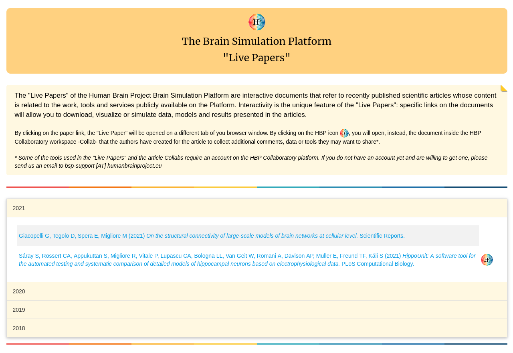
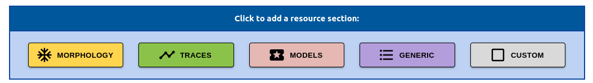

Create Live Papers
Share resources by creating live papers
Live Paper Platform
Collection of all public live papers
Published live papers are freely accessible oon the live paper platform. The live papers are listed in reverse chronological order:

You can click on any entry to view that specific live paper:

Searching / Filtering
Searching / Filtering the list of live papers
TODO: The live paper platform allows users to search for specific live papers and/or shortlist live papers based on specific criteria.


Resources
Accessing shared resources
For computational modeling studies, we have found that the most common resources being distributed comprise of the following:

- Morphologies
- Electrophysiological Recordings
- Models
- Other Content (Generic, Custom)
Click on the above links for more details on how to share each type of resource in a live paper.